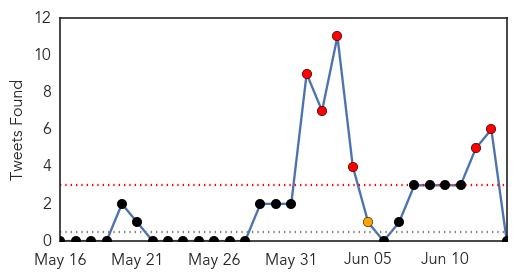

30 Day Trends
Web: 8 alerts, 3 warnings
Twitter: 6 alerts, 1 warnings
Top Articles:
- 1.000
- S Korea MERS virus outbreak ‘large and complex’: WHO
- 1.000
- SKorea MERS virus outbreak ‘large and complex’, says World Health Organisation
- 0.999
- Seven More MERS Cases Reported In South Korea
- 0.999
- South Korea reports seven new MERS cases
- 0.999
- Death toll from MERS outbreak in South Korea hits 14
- 0.999
- S. Korea, WHO experts downplay pandemic potential of MERS
- 0.999
- WHO plans emergency meeting as S. Korea MERS cases reach 145 — RT News
- 0.999
- Why MERS Is Likely To Crop Up Outside The Middle East Again
- 0.998
- S Korea shuts top hospital to stem MERS outbreak
- 0.997
- One more S. Korean dies of MERS, death toll up to 15
- 0.997
- MERS-hit top hospital partially closed
- 0.997
- Seven new MERS cases diagnosed in South Korea
- 0.997
- Xinhua Insight: China steps up MERS alert - Xinhua
- 0.997
- S Korea reports 15th MERS death, seven new cases - Kuwait Times
- 0.997
- S. Korea reports 15th MERS death, seven new cases (Update)
- 0.996
- South Korea reports 15th MERS death along with seven new cases Seoul
- 0.996
- S. Korea MERS death toll at 15 with 7 new cases
- 0.996
- MERS infections in S. Korea rise to 145, Samsung hospital closed - Xinhua
- 0.995
- South Korea reports 15th MERS fatality, seven new cases
- 0.995
- South Korea reports seven new MERS cases
- 0.995
- WHO: MERS outbreak 'large and complex' in South Korea
- 0.994
- Experts downplay MERS fears
- 0.994
- (3rd LD) One more S. Korean dies of MERS, death toll up to 15
- 0.994
- S. Korea reports 7 more MERS cases, bringing total to 145
- 0.994
- (2nd LD) S. Korea reports 7 more MERS cases, bringing total to 145
- 0.993
- Hospitals are the main source of rise in MERS cases
- 0.993
- Stay alert on Mers virus, HK experts warn after returning from South Korea
- 0.992
- S.Korean man thought to have MERS hospitalised in Slovakia
- 0.992
- South Korea reports 15th MERS death, 7 new cases
- 0.992
- S.Korean man thought to have MERS hospitalized in Slovakia
- 0.992
- MERS outbreak in Korea may be past its peak, panel says
- 0.991
- S. Korea reports 7 more MERS cases, bringing total to 145
- 0.990
- Saudi health experts to visit South Korea amid MERS crisis
- 0.989
- S Korea reports 15th MERS death
- 0.989
- South Korean thought to have MERS hospitalised in Slovakia – BorneoPost Online
- 0.989
- S Korea reports 15th MERS death
- 0.989
- South Korea’s response to MERS cases is faulted
- 0.988
- Mers death toll hits 15 in S. Korea; 145 infected, East Asia News & Top Stories
- 0.987
- South Korea’s response to MERS cases is faulted
- 0.987
- MERS infections in S. Korea rise to 145, Samsung hospital closed
- 0.986
- College Shut for a Week After Infection Scare
- 0.983
- Samsung forced to partially close-INSIDE Korea JoongAng Daily
- 0.982
- SKorean MERS outbreak feared to have travelled outside
- 0.979
- MERS export risks reduced
- 0.979
- One Hospital in Seoul Shut down for Becoming New Center of MERS Outbreak
- 0.977
- Hospital closes door to to try to stop spread of MERS
- 0.976
- 12 additional cases of #MERS reported bringing total number of cases in #outbreak to 138
- 0.972
- Florida Beach Goers Beware! Flesh-Eating Cannibal Like Bacteria Claims Two Lives
- 0.970
- World Health Organization Calls Emergency Meeting on 'Large, Complex' South Korea MERS Outbreak
- 0.969
- Slovakia treats new MERS case
Showing top 50 articles...
Top Tweets:
-
No tweets found for Jun 14, 2015
Web/News Articles

Tweets
Article Locations

Article Confidences